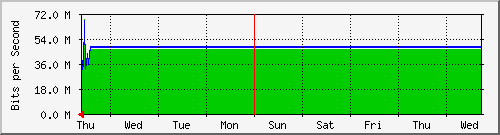

PROXY 1 INTERNET 2 TELMEX 300 MB
| System: | internet2.finanzas.cdmx.gob.mx in Perisur |
| Maintainer: | Arafa |
| Description: | ens192 |
| ifType: | ethernetCsmacd (6) |
| ifName: | ens192 |
| Max Speed: | 536.9 MBytes/s |
| Ip: | 10.1.195.73 (No DNS name) |
Estadísticas actualizadas el Jueves 21 de Julio de 2022 a las 14:35,
'internet2.finanzas.cdmx.gob.mx' ha estado funcionando durante 11 days, 21:56:09.
Gráfico diario (5 minutos : Promedio)
|
Máx |
Promedio |
Actual |
| Entrante: |
110.7 Mb/s (2.6%) |
45.5 Mb/s (1.1%) |
32.3 Mb/s (0.8%) |
| Saliente: |
106.9 Mb/s (2.5%) |
47.0 Mb/s (1.1%) |
31.5 Mb/s (0.7%) |
Gráfico semanal (30 minutos : Promedio)

|
Máx |
Promedio |
Actual |
| Entrante: |
68.4 Mb/s (1.6%) |
46.2 Mb/s (1.1%) |
43.8 Mb/s (1.0%) |
| Saliente: |
66.9 Mb/s (1.6%) |
47.8 Mb/s (1.1%) |
43.3 Mb/s (1.0%) |
Gráfico mensual (2 horas : Promedio)
|
Máx |
Promedio |
Actual |
| Entrante: |
46.3 Mb/s (1.1%) |
46.3 Mb/s (1.1%) |
44.8 Mb/s (1.0%) |
| Saliente: |
48.0 Mb/s (1.1%) |
47.9 Mb/s (1.1%) |
44.4 Mb/s (1.0%) |
Gráfico anual (1 día : Promedio)
|
Máx |
Promedio |
Actual |
| Entrante: |
46.3 Mb/s (1.1%) |
23.7 Mb/s (0.6%) |
46.3 Mb/s (1.1%) |
| Saliente: |
48.0 Mb/s (1.1%) |
24.5 Mb/s (0.6%) |
48.0 Mb/s (1.1%) |
| VERDE ### |
Entrante:coming Traffic in Bits per Second |
| AZUL ### |
Tráfico saliente en Bits por segundo |